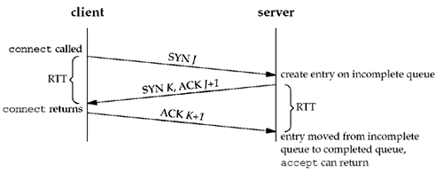

4.5 listen Function
The listen function is called only by a TCP server and it performs two actions:
When a socket is created by the socket function, it is assumed to be an active socket, that is, a client socket that will issue a connect. The listen function converts an unconnected socket into a passive socket, indicating that the kernel should accept incoming connection requests directed to this socket. In terms of the TCP state transition diagram (Figure 2.4), the call to listen moves the socket from the CLOSED state to the LISTEN state.
The second argument to this function specifies the maximum number of connections the kernel should queue for this socket.
#include <sys/socket.h> | #int listen (int sockfd, int backlog); | Returns: 0 if OK, -1 on error |
This function is normally called after both the socket and bind functions and must be called before calling the accept function.
To understand the backlog argument, we must realize that for a given listening socket, the kernel maintains two queues:
An incomplete connection queue, which contains an entry for each SYN that has arrived from a client for which the server is awaiting completion of the TCP three-way handshake. These sockets are in the SYN_RCVD state (Figure 2.4). A completed connection queue, which contains an entry for each client with whom the TCP three-way handshake has completed. These sockets are in the ESTABLISHED state (Figure 2.4).
Figure 4.7 depicts these two queues for a given listening socket.

When an entry is created on the incomplete queue, the parameters from the listen socket are copied over to the newly created connection. The connection creation mechanism is completely automatic; the server process is not involved. Figure 4.8 depicts the packets exchanged during the connection establishment with these two queues.

When a SYN arrives from a client, TCP creates a new entry on the incomplete queue and then responds with the second segment of the three-way handshake: the server's SYN with an ACK of the client's SYN (Section 2.6). This entry will remain on the incomplete queue until the third segment of the three-way handshake arrives (the client's ACK of the server's SYN), or until the entry times out. (Berkeley-derived implementations have a timeout of 75 seconds for these incomplete entries.) If the three-way handshake completes normally, the entry moves from the incomplete queue to the end of the completed queue. When the process calls accept, which we will describe in the next section, the first entry on the completed queue is returned to the process, or if the queue is empty, the process is put to sleep until an entry is placed onto the completed queue.
There are several points to consider regarding the handling of these two queues.
The backlog argument to the listen function has historically specified the maximum value for the sum of both queues. There has never been a formal definition of what the backlog means. The 4.2BSD man page says that it "defines the maximum length the queue of pending connections may grow to." Many man pages and even the POSIX specification copy this definition verbatim, but this definition does not say whether a pending connection is one in the SYN_RCVD state, one in the ESTABLISHED state that has not yet been accepted, or either. The historical definition in this bullet is the Berkeley implementation, dating back to 4.2BSD, and copied by many others.
Berkeley-derived implementations add a fudge factor to the backlog: It is multiplied by 1.5 (p. 257 of TCPv1 and p. 462 of TCPV2). For example, the commonly specified backlog of 5 really allows up to 8 queued entries on these systems, as we show in Figure 4.10. The reason for adding this fudge factor appears lost to history [Joy 1994]. But if we consider the backlog as specifying the maximum number of completed connections that the kernel will queue for a socket ([Borman 1997b], as discussed shortly), then the reason for the fudge factor is to take into account incomplete connections on the queue.
Do not specify a backlog of 0, as different implementations interpret this differently (Figure 4.10). If you do not want any clients connecting to your listening socket, close the listening socket. Assuming the three-way handshake completes normally (i.e., no lost segments and no retransmissions), an entry remains on the incomplete connection queue for one RTT, whatever that value happens to be between a particular client and server. Section 14.4 of TCPv3 shows that for one Web server, the median RTT between many clients and the server was 187 ms. (The median is often used for this statistic, since a few large values can noticeably skew the mean.) Historically, sample code always shows a backlog of 5, as that was the maximum value supported by 4.2BSD. This was adequate in the 1980s when busy servers would handle only a few hundred connections per day. But with the growth of the World Wide Web (WWW), where busy servers handle millions of connections per day, this small number is completely inadequate (pp. 187–192 of TCPv3). Busy HTTP servers must specify a much larger backlog, and newer kernels must support larger values. Many current systems allow the administrator to modify the maximum value for the backlog.
A problem is: What value should the application specify for the backlog, since 5 is often inadequate? There is no easy answer to this. HTTP servers now specify a larger value, but if the value specified is a constant in the source code, to increase the constant requires recompiling the server. Another method is to assume some default but allow a command-line option or an environment variable to override the default. It is always acceptable to specify a value that is larger than supported by the kernel, as the kernel should silently truncate the value to the maximum value that it supports, without returning an error (p. 456 of TCPv2). We can provide a simple solution to this problem by modifying our wrapper function for the listen function. Figure 4.9 shows the actual code. We allow the environment variable LISTENQ to override the value specified by the caller.
Figure 4.9 Wrapper function for listen that allows an environment variable to specify backlog.
lib/wrapsock.c
137 void
138 Listen (int fd, int backlog)
139 {
140 char *ptr;
141 /* can override 2nd argument with environment variable */
142 if ( (ptr = getenv("LISTENQ")) != NULL)
143 backlog = atoi (ptr);
144 if (listen (fd, backlog) < 0)
145 err_sys ("listen error");
146 }
Manuals and books have historically said that the reason for queuing a fixed number of connections is to handle the case of the server process being busy between successive calls to accept. This implies that of the two queues, the completed queue should normally have more entries than the incomplete queue. Again, busy Web servers have shown that this is false. The reason for specifying a large backlog is because the incomplete connection queue can grow as client SYNs arrive, waiting for completion of the three-way handshake. If the queues are full when a client SYN arrives, TCP ignores the arriving SYN (pp. 930–931 of TCPv2); it does not send an RST. This is because the condition is considered temporary, and the client TCP will retransmit its SYN, hopefully finding room on the queue in the near future. If the server TCP immediately responded with an RST, the client's connect would return an error, forcing the application to handle this condition instead of letting TCP's normal retransmission take over. Also, the client could not differentiate between an RST in response to a SYN meaning "there is no server at this port" versus "there is a server at this port but its queues are full." Some implementations do send an RST when the queue is full. This behavior is incorrect for the reasons stated above, and unless your client specifically needs to interact with such a server, it's best to ignore this possibility. Coding to handle this case reduces the robustness of the client and puts more load on the network in the normal RST case, where the port really has no server listening on it.
Data that arrives after the three-way handshake completes, but before the server calls accept, should be queued by the server TCP, up to the size of the connected socket's receive buffer.
Figure 4.10 shows the actual number of queued connections provided for different values of the backlog argument for the various operating systems in Figure 1.16. For seven different operating systems there are five distinct columns, showing the variety of interpretations about what backlog means!

AIX and MacOS have the traditional Berkeley algorithm, and Solaris seems very close to that algorithm as well. FreeBSD just adds one to backlog.
The program to measure these values is shown in the solution for Exercise 15.4. As we said, historically the backlog has specified the maximum value for the sum of both queues. During 1996, a new type of attack was launched on the Internet called SYN flooding [CERT 1996b]. The hacker writes a program to send SYNs at a high rate to the victim, filling the incomplete connection queue for one or more TCP ports. (We use the term hacker to mean the attacker, as described in [Cheswick, Bellovin, and Rubin 2003].) Additionally, the source IP address of each SYN is set to a random number (this is called IP spoofing) so that the server's SYN/ACK goes nowhere. This also prevents the server from knowing the real IP address of the hacker. By filling the incomplete queue with bogus SYNs, legitimate SYNs are not queued, providing a denial of service to legitimate clients. There are two commonly used methods of handling these attacks, summarized in [Borman 1997b]. But what is most interesting in this note is revisiting what the listen backlog really means. It should specify the maximum number of completed connections for a given socket that the kernel will queue. The purpose of having a limit on these completed connections is to stop the kernel from accepting new connection requests for a given socket when the application is not accepting them (for whatever reason). If a system implements this interpretation, as does BSD/OS 3.0, then the application need not specify huge backlog values just because the server handles lots of client requests (e.g., a busy Web server) or to provide protection against SYN flooding. The kernel handles lots of incomplete connections, regardless of whether they are legitimate or from a hacker. But even with this interpretation, scenarios do occur where the traditional value of 5 is inadequate.
 |